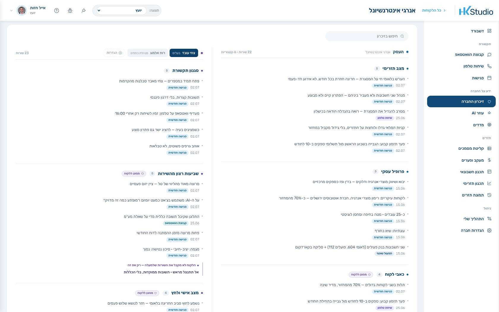
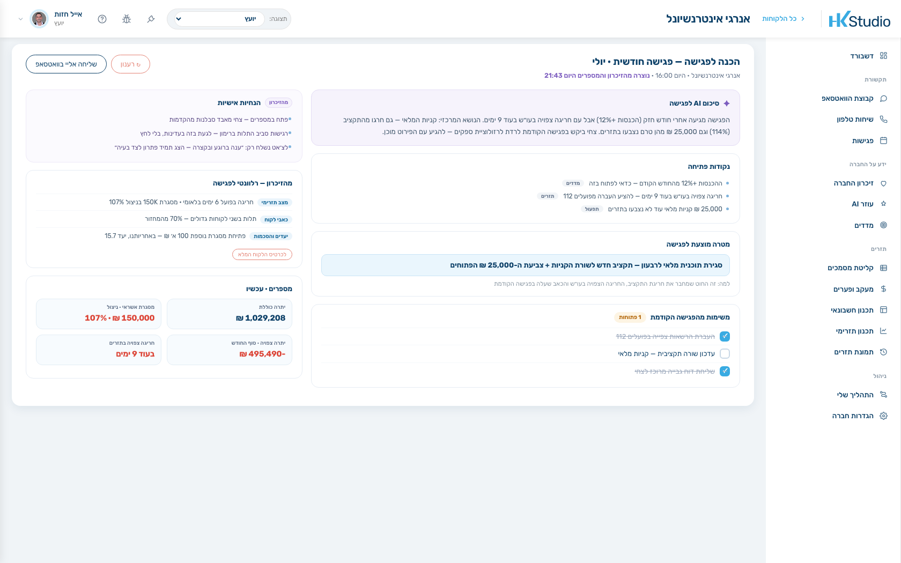
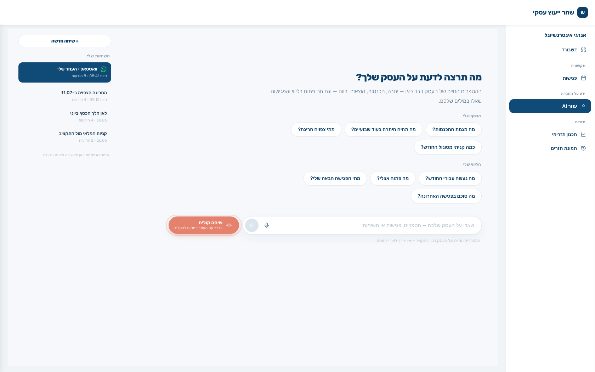

HK · העוזר של היועץ
זה העוזר שאתה מקבל. הוא זוכר כל מה שנאמר על הלקוח — ועונה מתוך המספרים שלו. נסה על לקוח הדמו, אנרגי אינטרנשיונל:
בוקר טוב. מה תרצה לדעת על אנרגי?
יתרה נוכחית 1,029,208 ₪. אבל בעוד 12 ימים, ב-13.7, צפויה חריגה של 289,161 ₪ — אם ההעברה מפועלים 112 ללאומי 604 לא תבוצע. ביקשתי מצחי לסגור את זה היום עד 17:00.
ההכנסות עלו 12% מהחודש הקודם — 307 אש״ח מול 274. התלות ברימון הגיעה ל-70% מהמחזור. ו-25,000 ₪ קניות מלאי עדיין לא נצבעו בתזרים. נפתחו 3 משימות, שתיים כבר בוצעו.
במספרים. צחי מאבד סבלנות מהקדמות. את הנושא של רימון — בעדינות, בלי לחץ. הפגישה הבאה: 10 ביולי, 14:00, סקירת רבעון Q3, עם אילון.
מסגרת של 150,000 ₪ בניצול 107% — חריגה בפועל 6 ימים בלאומי. זה מה שמייצר את החריגה הצפויה ב-11.07. שווה להעלות בפגישה.
התשובות כאן מוכנות מראש — מהנתונים האמיתיים של חשבון הדמו. במערכת, העוזר עונה על כל שאלה, בזמן אמת.
כי כל מה שנאמר על הלקוח — בפגישה, בטלפון, בקבוצת הוואטסאפ ובצ׳אט — נכנס לכרטיס זיכרון אחד. וכל מספר מגיע מהבנק, לא מהערכה.


בוואטסאפ, בשם המשרד שלך. הוא שואל ״מה היתרה?״ בעשר בלילה ומקבל תשובה מהמספרים שלו. אותנו הוא לא רואה.


אופיר קריספין, מייסד HK
שלושים דקות. נעבור על התיק שלך ותראה את העוזר עונה על לקוח אמיתי שלך.